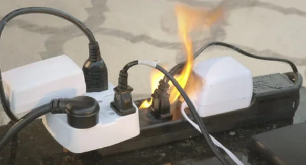
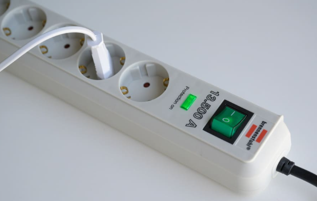
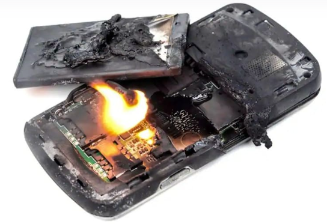
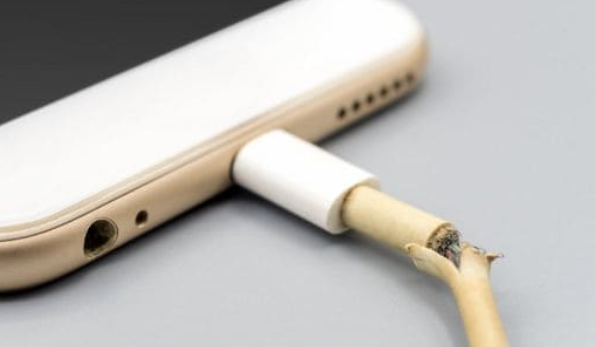
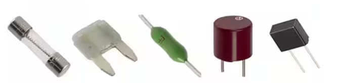
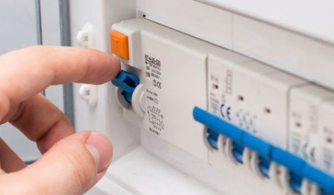
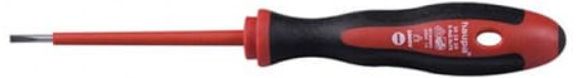

Comenzamos a desgranar un aspecto muy importante de la computación y la robótica: la seguridad al trabajar con dispositivos eléctricos. Este conocimiento es fundamental para asegurar que tanto nosotros como nuestros dispositivos estemos protegidos.
Conceptos básicos
La electricidad es algo cotidiano, pero un uso inadecuado de la misma puede producirnos daños a las personas (electrocución) o a las cosas (deterioro de dispositivos, incendios, etc.)
Es importante recordar que la electricidad, aunque necesaria en nuestra vida cotidiana, debe manejarse con cuidado y también con conocimiento.
Uso correcto de enchufes
Seguro que en casa tenéis varios aparatos conectados: la televisión, la consola de videojuegos, el cargador del móvil. Es muy importante que evitemos sobrecargar los enchufes.
¿Qué significa sobrecargar un enchufe?

De la misma manera que no podéis cerrar la mochila cuando intentáis meter demasiadas cosas, algo similar sucede con los enchufes. Si conectamos demasiados dispositivos a un solo enchufe o regleta, estamos demandando más electricidad de la que puede manejar de manera segura, lo que puede provocar un sobrecalentamiento y, en casos extremos, un incendio.
¿Cómo lo evitamos?

Utilizando regletas de enchufes con protección contra sobrecargas y repartiendo los dispositivos entre diferentes enchufes en la casa. Por ejemplo, no es recomendable conectar la televisión, la consola de videojuegos, el ordenador y varios cargadores de móviles a la misma regleta.
Manejo seguro de baterías

Las baterías las encontramos en muchos dispositivos, desde los móviles hasta pequeños robots de juguete.
Las baterías no deben exponerse a altas temperaturas. Por ejemplo, dejar vuestro móvil al sol directo durante un día caluroso puede dañar la batería e incluso hacer que se hinche o explote.
No debéis manipular bruscamente las baterías. Si una batería se daña, puede filtrar sustancias químicas peligrosas o causar un cortocircuito en el dispositivo. Por lo tanto, si la batería de vuestro juguete se rompe, es mejor pedir ayuda a un adulto para su correcta manipulación.
Cables

Revisad regularmente el estado de los cables de vuestros dispositivos. Si un cable está dañado, pelado o roto, puede ser un riesgo de descarga eléctrica. En ese caso, el cable debe ser reemplazado. No olvides que un cable defectuoso es peligroso y puede causar lesiones serias.Cuando no estéis usando un dispositivo, es una buena práctica desenchufarlo. Esto no solo ahorra energía, sino que también reduce el riesgo de sobrecalentamiento o problemas eléctricos.
Un aspecto fundamental de la seguridad eléctrica es la prevención de cortocircuitos. Un cortocircuito sucede cuando la electricidad toma un camino incorrecto o inesperado, a menudo debido a un cable dañado o un dispositivo defectuoso. Los cables con aislamiento roto o gastado son un riesgo de cortocircuito. Si veis un cable en estas condiciones, no lo toquéis y avisad a un adulto.
Dispositivos de seguridad eléctrica
Estos dispositivos son una garantía para nuestra seguridad cuando trabajamos con electricidad, ya sea en proyectos de robótica, reparando un ordenador, o simplemente en nuestra vida cotidiana en casa.
Fusibles
Un fusible es como un héroe que se sacrifica para salvar al resto. Se trata de un dispositivo de seguridad que protege un circuito eléctrico. Contiene un filamento metálico que se funde y rompe el circuito si la corriente eléctrica excede un nivel seguro, previniendo así un sobrecalentamiento y posibles incendios. Por ejemplo, si tenéis un juguete eléctrico que se avería y comienza a consumir demasiada electricidad, el fusible de ese juguete se quemará y cortará la corriente, protegiendo el juguete y, lo más importante, a vosotros.

Disyuntores
Los disyuntores son como interruptores automáticos. Se encuentran en el cuadro eléctrico de vuestras casas. Su función es similar a la de los fusibles, pero con una ventaja: después de “saltar” debido a una sobrecarga o cortocircuito, pueden ser restablecidos manualmente. Por ejemplo, si enchufáis demasiados dispositivos en una habitación y la carga es demasiado alta, el disyuntor saltará, interrumpiendo la electricidad en esa zona. Luego, se puede volver a encender manualmente una vez resuelto el problema.
¿No habéis oído alguna vez a vuestro padre o madre decir “han saltado los plomos”? Seguramente porque han conectado tantos electrodomésticos que han superado la cantidad de potencia disponible y un disyuntor ha saltado antes de que se sobrecaliente y cortocircuite el sistema de tu casa. La solución, es sencilla, se desconectan o apagan aparatos y se vuelve a subir el disyuntor.

Materiales aislantes
Los materiales aislantes son aquellos que no conducen electricidad y nos protegen de posibles descargas eléctricas. Son la primera línea de defensa en seguridad eléctrica. Por ejemplo, el plástico y la goma son excelentes aislantes.
Pensemos en un destornillador utilizado para reparar un dispositivo electrónico. Los mangos de estos destornilladores suelen estar hechos de materiales aislantes como el plástico. Esto es para protegeros de recibir una descarga eléctrica si el metal del destornillador accidentalmente toca un componente con electricidad.

En casa, encontramos aislantes en muchos lugares, como el revestimiento de plástico alrededor de los cables de los electrodomésticos. Este revestimiento asegura que la electricidad fluya únicamente por donde debe ir y no hacia vosotros cuando tocáis el cable.